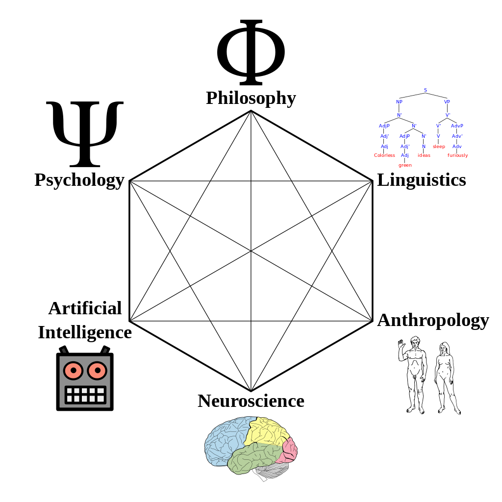

Teoria da mente
O que é Mente?
Não existe uma definição comprovada de Mente .A mente pode ser definida como uma instanciação da inteligência.
A mente pode ser definida como uma coleção de conhecimento.
Pensar, sentir e significar é mente ou know-how?
A Mente é apenas um grande computador?
Ciência cognitiva
A ciência cognitiva é o estudo dos processos mentais .
Um cientista cognitivo estuda inteligência e comportamento.
A ciência cognitiva se concentra em como as células cerebrais processam e transformam informações.
A Ciência Cognitiva também tenta aprender a desenvolver algoritmos de computador inteligentes.

O Modelo Mental
Um modelo mental é uma imagem interna da realidade externa.
Os cientistas esperam que um modelo desempenhe um papel importante no raciocínio e na tomada de decisões (cognição).
Kenneth Craik sugeriu em 1943 que a mente constrói "modelos em pequena escala" da realidade ao tentar antecipar eventos.
✔ A imagem do mundo ao nosso redor, que carregamos na cabeça, é apenas um modelo.
Ninguém em sua cabeça imagina todo o mundo, governo ou país.
Ele selecionou apenas conceitos e relacionamentos entre eles,
e os usa para representar o sistema real.
Jay Wright Forrester, 1971.
A IA pode ser humana?
Os cientistas estão tentando descobrir o que separa a inteligência humana da inteligência artificial.
Qual é o status? Qual é o futuro?
Ano 2000: Máquinas Reativas Ano de 2015: aprendizado de máquina Ano 2030: Teoria da Mente Ano 2050: Autoconsciência
Máquinas reativas

Os primeiros sistemas de IA eram reativos. Os sistemas reativos não podem usar a experiência passada.
Em 1997, uma máquina reativa ("IBM Deep Blue") venceu o campeão mundial de xadrez.
"Deep Blue" não conseguia pensar. Mas estava armazenado com informações sobre o tabuleiro de xadrez e as regras para mover as peças de xadrez.
"Deep Blue" ganhou porque foi programado para calcular cada movimento para ganhar.
Aprendizado de máquina
Hoje, os sistemas de IA podem usar algumas informações do passado.
Um exemplo são os carros autônomos. Eles podem combinar informações pré-programadas com informações que coletam enquanto aprendem a dirigir.
Teoria da mente
Teoria da Mente é um termo da psicologia sobre a capacidade de um indivíduo para empatia e compreensão dos outros.
Esta é uma consciência de que os outros são como você, com necessidades e intenções individuais.
Uma das habilidades que os usuários da linguagem têm é comunicar sobre coisas que não são concretas, como necessidades, ideias ou conceitos.
Simon Baron-Cohen , psicólogo britânico e professor da Universidade de Cambridge, argumenta (1999) que a "Teoria da Mente" deve ter precedido as linguagens, com base no conhecimento sobre as atividades humanas primitivas:
Ensino
Construindo Metas Compartilhadas
Construindo Planos Compartilhados
Comunicação Intencional
Compartilhamento intencional do tópico
Compartilhamento intencional de foco
Persuasão intencional
Fingimento intencional
Engano Intencional
Autoconsciência
Na psicologia, "Teoria da Mente" significa que as pessoas têm pensamentos, sentimentos e emoções que afetam seu comportamento.
Os futuros sistemas de IA devem aprender a entender que todos (tanto pessoas quanto objetos de IA) têm pensamentos e sentimentos.
Os futuros sistemas de IA devem saber ajustar seu comportamento para poder caminhar entre nós.
O último passo, antes que a IA possa ser humana, é a consciência da máquina.
Não podemos construir este software antes de sabermos muito mais sobre o cérebro humano, memória e inteligência.